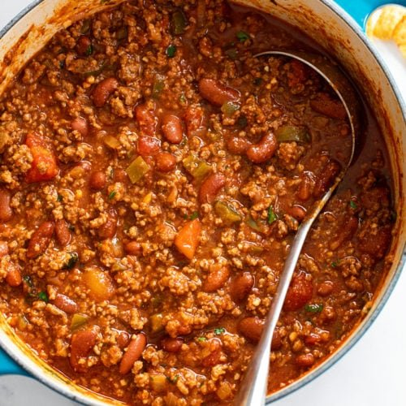

Chili

Homemade Chili
Here it is, my family's recipe for chili. Everyone has their own favorite recipe that beats all the rest, and here's mine. No need to beat around the bush on this one, chili is chili.
Ingredients
- 1 green pepper
- 1 small onion
- 2 cloves of garlic
- 2 celery stalks
- 1 lb. ground beef
- 1 28 oz. can diced tomatoes
- 1 28 oz. can tomato sauce
- 1 large or 3 small cans of red kidney beans
- 1 bottle/can of any beer
- 1 Tbsp sugar
- 1 Tbsp cumin
- 1/2 tsp ground black pepper
- 3 Tbsp chili powder
- 1 lb. Shell pasta noodles
- Cayenne pepper to taste
- Saltine crackers
- Shredded cheese
Steps
- Dice the green pepper, onion, garlic, and celery stalks, then add to a large pot together with the ground beef and cook on medium heat, stirring frequently
- Once the ground beef mixture is cooked, add the diced tomatoes, tomato sauce, and kidney beans and continue cooking the mixture
- Next, add the beer, sugar, cumin, black pepper, and chili powder to the mixture
- Simmer for 2+ hours, stirring occasionally
- Once the chili is ready, in a separate pot cook the shell pasta to al dente, then add to the chili mixture
- Add cayenne pepper as necessary
- Lastly, serve the chili into bowls, crunch a couple of saltines using your hands into the chili, then top with your choice of shredded cheese
- Enjoy!